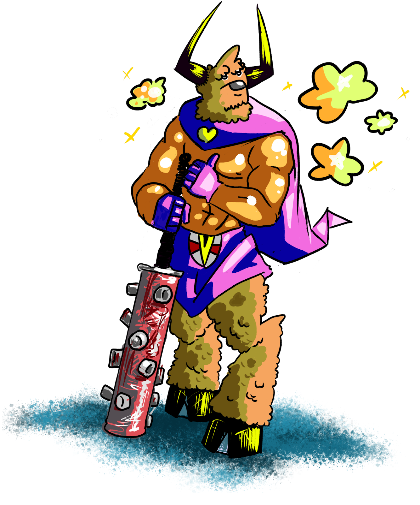

Minotaurs
Mighty and formidable, Minotaurs are the guardians of ancient secrets and sacred sites. Their Strength is legendary, as is their unwavering honor. Living in the labyrinthine complexes of Terra Megalithia, they are both a symbol of protection and the challenge to those who dare to uncover the ancient mysteries they guard.

Size: 5 Cubic Feet
HP Maximum: 110
Energy Maximum: 10
Encumbrance Capacity: 150
Natural Defense: +2
Speed: 30 feet
Gets an advantage bonus for Strength rolls equal to her Small Bonus. As long as a minotaur has not been teleported, she cannot become lost. She also cannot be moved by the effects of abilities.